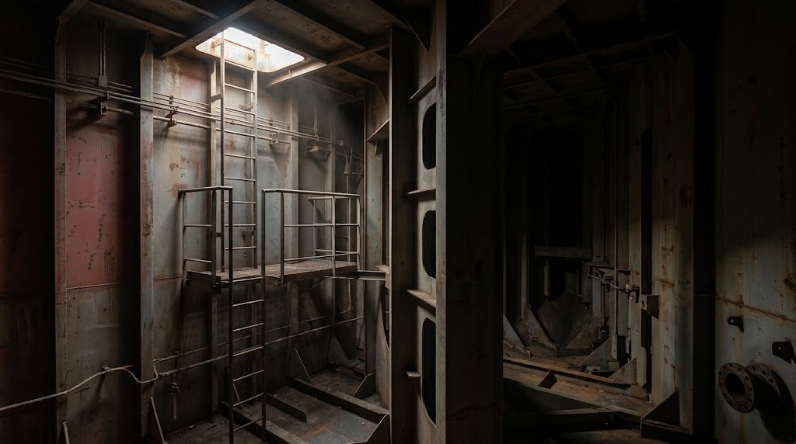

Survey · Enclosed space entry
Test the space before anyone goes in, then decide on the entry permit.
Fresh-air check first. Then tap a point: the pump draws the sample up the hose - record it when the meter says STABLE.

propane - heavier than air
leaking flange
Go to the permit